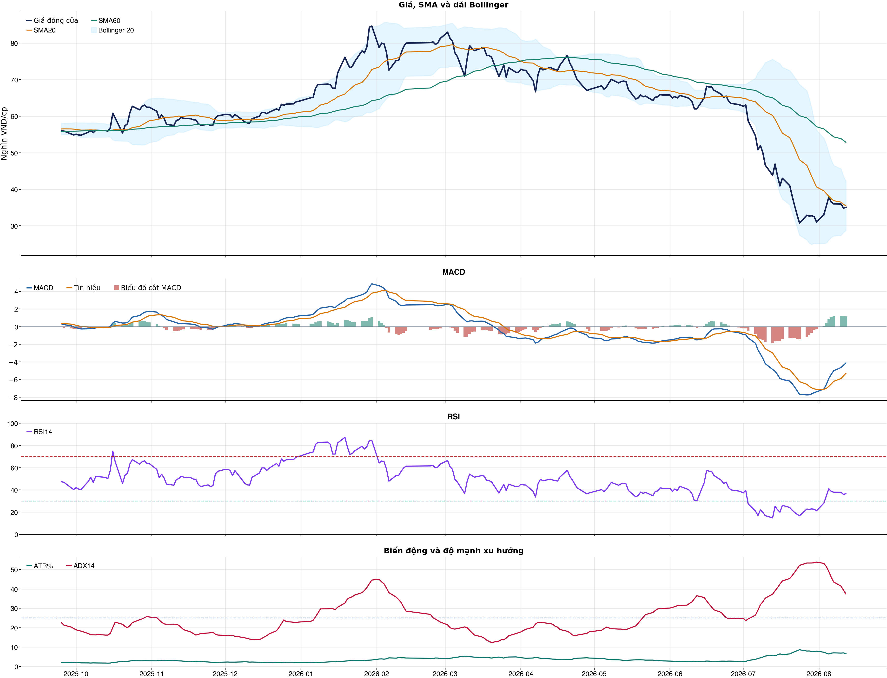
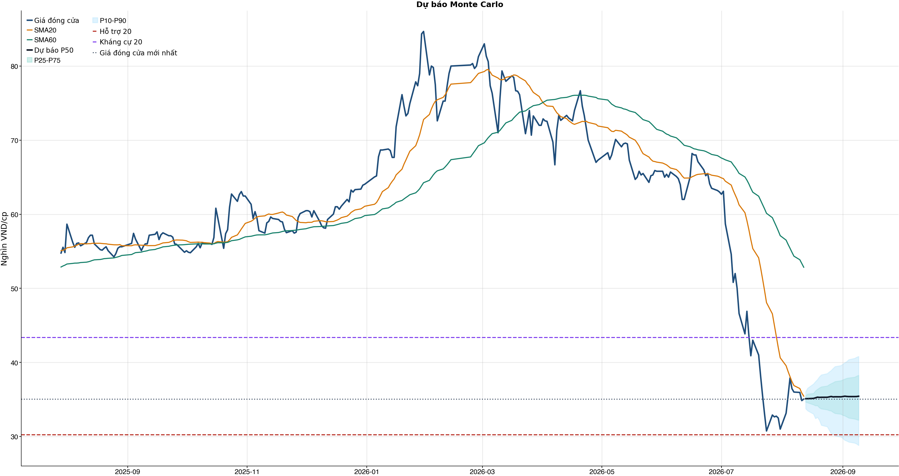
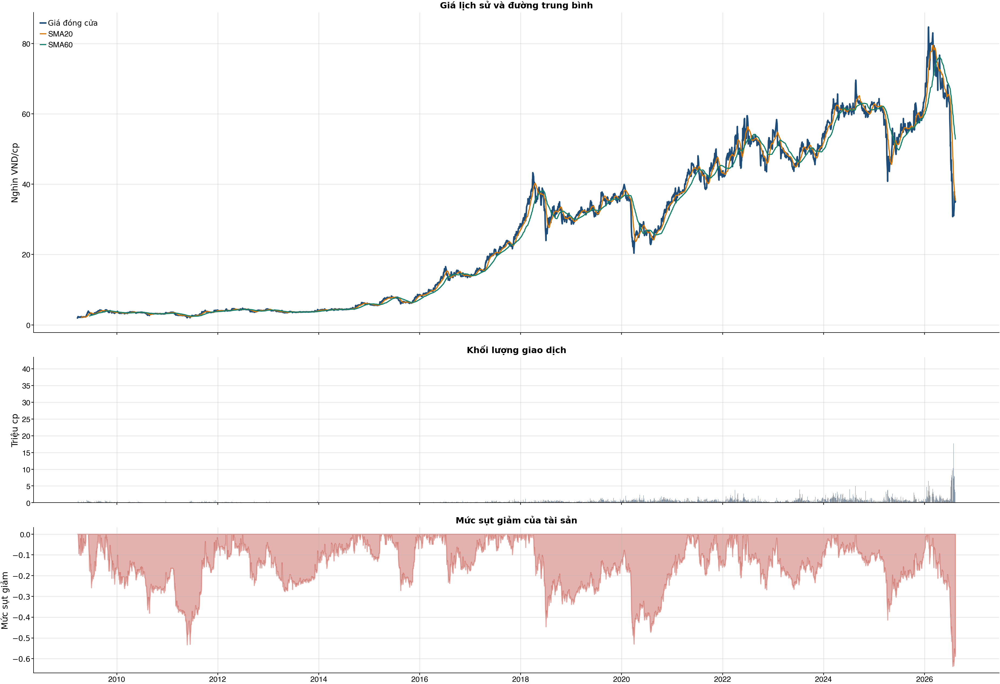

Kết quả chính
Tổng quan cơ bản
Biểu đồ kỹ thuật

Tín hiệu kỹ thuật
| Xu hướng | Cẩn thận | Giá nằm dưới SMA60. |
| MACD | Tích cực | MACD trên signal, histogram dương. |
| RSI14 | Yếu | RSI 36.5. |
| Bollinger | Ổn định | Giá nằm trong dải Bollinger. |
| ADX | Xu hướng giảm | ADX 37.4, -DI vượt +DI. |
| Thanh khoản | Thấp | 0.24 lần trung bình. |
| Stochastic | Yếu lại | %K nằm dưới %D. |
So sánh mô hình
| XGBoost | 0.492 | AUC 0.487 |
| Logistic | 0.487 | AUC 0.503 |
| Đa số | 0.500 | Mốc so sánh |
Kiểm thử chiến lược ngoài mẫu sau chi phí
| Lợi nhuận ròng | -5.5% | 660 quan sát ngoài mẫu |
| Sharpe | -0.19 | Sau chi phí |
| Mức sụt giảm tối đa | -19.7% | 37 vòng giao dịch |
| Chi phí giả định | 50.0 bps | Một vòng mua và bán |
Mức độ quan trọng của đặc trưng
| return_20d | 11.88 | Mức đóng góp |
| market_return_1d | 11.22 | Mức đóng góp |
| rsi_14 | 11.02 | Mức đóng góp |
| close_vs_sma60 | 10.77 | Mức đóng góp |
| excess_return_1d | 10.59 | Mức đóng góp |
| adx_14 | 10.47 | Mức đóng góp |
| return_1d | 10.37 | Mức đóng góp |
| day_of_week | 10.35 | Mức đóng góp |
Điều kiện phát hành tín hiệu
| AUC của mô hình | KHÔNG ĐẠT | Điều kiện phát hành tín hiệu |
| Độ chính xác cân bằng của mô hình | KHÔNG ĐẠT | Điều kiện phát hành tín hiệu |
| XGBoost vượt mô hình Logistic đối chứng | KHÔNG ĐẠT | Điều kiện phát hành tín hiệu |
| Xác suất tăng đạt ngưỡng | KHÔNG ĐẠT | Điều kiện phát hành tín hiệu |
| Bối cảnh kỹ thuật đạt ngưỡng | KHÔNG ĐẠT | Điều kiện phát hành tín hiệu |
| Tỷ lệ lợi nhuận/rủi ro đạt ngưỡng | ĐẠT | Điều kiện phát hành tín hiệu |
| Dữ liệu còn mới | ĐẠT | Điều kiện phát hành tín hiệu |
| Có khối lượng vị thế hợp lệ | ĐẠT | Điều kiện phát hành tín hiệu |
| Có kết quả kiểm thử chiến lược ngoài mẫu | ĐẠT | Điều kiện phát hành tín hiệu |
| Mẫu kiểm thử chiến lược đủ lớn | ĐẠT | Điều kiện phát hành tín hiệu |
| Kiểm thử chiến lược có lợi thế ròng | KHÔNG ĐẠT | Điều kiện phát hành tín hiệu |
Quản trị rủi ro
| Rủi ro/lệnh | 1.0% | 1,000,000 VND |
| Mức dừng lỗ | 31.59 | Rủi ro mỗi cổ phiếu 3.63 |
| Mục tiêu 1 | 40.81 | Lợi nhuận/rủi ro 1.53 |
| Mục tiêu 2 | 43.35 | Dự báo/kháng cự |
Phân tích cơ bản
| P/E | 6.14 | 2026-Q2 |
| P/B | 1.28 | 2026-Q2 |
| P/S | 0.41 | 2026-Q2 |
| ROE | 21.6% | 2026-Q2 |
| ROA | 14.9% | 2026-Q2 |
| Gross margin | 20.7% | 2026-Q2 |
| Net margin | 6.7% | 2026-Q2 |
| Debt/Equity | 0.51 | 2026-Q2 |
| Current ratio | 2.74 | 2026-Q2 |
| NPL | 0.0% | 2026-Q2 |
| Dividend yield | 0.0% | 2026-Q2 |
| Market cap | 17,833.5 tỷ | 2026-Q2 |
| Revenue Growth | 11.9% | 2026-Q2 YoY |
| Profit Growth | -164.7% | 2026-Q2 YoY |
| Dòng tiền từ HĐKD | -1,568.2 tỷ | 2026-Q2 |
| CAPEX | -21.5 tỷ | 2026-Q2 |
| Lợi nhuận sau thuế | -283.0 tỷ | 2026-Q2 |
| Lợi nhuận hoạt động | -345.8 tỷ | 2026-Q2 |
| Chi phí lãi vay | -56.9 tỷ | 2026-Q2 |
| Tiền và tương đương tiền | 608.7 tỷ | 2026-Q2 |
| Vay ngắn hạn | 3,989.1 tỷ | 2026-Q2 |
| Vay dài hạn | 0.0 tỷ | 2026-Q2 |
| Tổng tài sản | 21,017.6 tỷ | 2026-Q2 |
| Tổng nợ phải trả | 7,105.0 tỷ | 2026-Q2 |
| Vốn chủ sở hữu | 13,912.5 tỷ | 2026-Q2 |
| Khoản phải thu | 193.3 tỷ | 2026-Q2 |
| Hàng tồn kho | 15,149.4 tỷ | 2026-Q2 |
| Dòng tiền tự do (CFO - CAPEX) | -1,589.7 tỷ | 2026-Q2 |
| CFO / Lợi nhuận sau thuế | 5.54 | 2026-Q2 |
| Nợ vay ròng | 3,380.5 tỷ | 2026-Q2 |
| Nợ vay / Vốn chủ sở hữu | 0.29 | 2026-Q2 |
| Phải thu / Tổng tài sản | 0.9% | 2026-Q2 |
| Khả năng trả lãi (EBIT / lãi vay) | -6.08 | 2026-Q2 |
Tin tức doanh nghiệp
| Trạng thái | Có dữ liệu | research_only |
| Nguồn / số bài | VCI | 50 |
| Bài đủ timestamp | 50 | Chỉ các bài này mới được phép dùng point-in-time |
| Sentiment 5 ngày | 0.00 | 3.0 bài trước cutoff |
| Phương pháp | keyword_heuristic_v1 | Research only; chưa dùng làm tín hiệu mua/bán |
Dự báo ngắn hạn
| 2026-08-13 | 35.10 | P10 33.76 / P90 36.04 |
| 2026-08-14 | 35.11 | P10 33.48 / P90 36.52 |
| 2026-08-17 | 35.14 | P10 33.04 / P90 37.09 |
| 2026-08-18 | 35.22 | P10 32.43 / P90 37.41 |
| 2026-08-19 | 35.31 | P10 32.60 / P90 37.68 |
| 2026-08-20 | 35.28 | P10 32.21 / P90 38.05 |
| 2026-08-21 | 35.29 | P10 31.53 / P90 38.32 |
| 2026-08-24 | 35.30 | P10 31.33 / P90 38.49 |
Biểu đồ dự báo

Lịch sử giá và mức sụt giảm

Báo cáo dùng để học tập và lập kịch bản, không phải khuyến nghị mua/bán.
Phân tích AI có kiểm chứng
Trạng thái quyết định: NO_EDGE
Tóm tắt: ML decision hiện giữ nguyên NO_EDGE. News Reader đã trích đoạn có nguồn của 4 bài để phân loại chủ đề (ket_qua_kinh_doanh: 4, co_tuc_va_hanh_dong_doanh_nghiep: 4, vi_mo: 2, nganh: 2, rui_ro: 2), nhưng các trích đoạn này không tạo bằng chứng mới cho quyết định đầu tư.
Kỹ thuật: Artifact kỹ thuật: bias Suy yếu / cẩn thận; điểm -4. Chi tiết artifact: Xu hướng: Cẩn thận (Giá nằm dưới SMA60.); MACD: Tích cực (MACD trên signal, histogram dương.); RSI14: Yếu (RSI 36.5.); Bollinger: Ổn định (Giá nằm trong dải Bollinger.); ADX: Xu hướng giảm (ADX 37.4, -DI vượt +DI.); Thanh khoản: Thấp (0.24 lần trung bình.); Stochastic: Yếu lại (%K nằm dưới %D.)
Cơ bản: Artifact cơ bản: Vàng Phú Nhuận; kỳ 2026-Q2; P/E 6.14; P/B 1.28; ROE 21.6%; ROA 14.9%; Debt/Equity 0.51; Revenue Growth 11.9%; Profit Growth -164.7%.
Tin tức: Đã đọc trích đoạn giới hạn của 4 bài; phân nhóm rule-based: ket_qua_kinh_doanh: 4, co_tuc_va_hanh_dong_doanh_nghiep: 4, vi_mo: 2, nganh: 2, rui_ro: 2. Tác động cần kiểm chứng: Đối chiếu doanh thu/lợi nhuận trong bài với BCTC và kỳ vọng thị trường. Kiểm tra ngày GDKHQ, tỷ lệ, nguồn chi trả và nguy cơ pha loãng trước khi đánh giá tác động. Đối chiếu thời điểm công bố và kênh tác động lãi suất/tỷ giá với mô hình kinh doanh. So sánh tín hiệu ngành với thị phần, nhu cầu và đối thủ trước khi suy luận cho riêng doanh nghiệp. Xác minh công bố chính thức, phạm vi ảnh hưởng và khả năng định lượng rủi ro. Đây không phải sentiment hay dự báo tác động giá.
Live research: Live snapshot lấy lúc 2026-08-12T15:30:41.923219+00:00; News Reader đọc được 4 bài. ML có 6 lý do guard và vẫn là NO_EDGE. Không dùng tin live để train/backtest.
Rủi ro cần kiểm chứng
- ML guard: AUC 0.487 < 0.540
- ML guard: Balanced accuracy 0.492 < 0.520
- ML guard: XGBoost chưa vượt logistic baseline: AUC XGBoost=0.4871697237055955, AUC logistic=0.5025029022521477
- ML guard: Probability 48.2% < 55.0%
- ML guard: Technical score -4 < 2
- ML guard: Lợi thế OOS ròng không đạt: return=-0.05460289999999968, Sharpe=-0.1917641851198188
- News Reader: Đối chiếu doanh thu/lợi nhuận trong bài với BCTC và kỳ vọng thị trường.
- News Reader: Kiểm tra ngày GDKHQ, tỷ lệ, nguồn chi trả và nguy cơ pha loãng trước khi đánh giá tác động.
- News Reader: Đối chiếu thời điểm công bố và kênh tác động lãi suất/tỷ giá với mô hình kinh doanh.
- News Reader: So sánh tín hiệu ngành với thị phần, nhu cầu và đối thủ trước khi suy luận cho riêng doanh nghiệp.
- News Reader: Xác minh công bố chính thức, phạm vi ảnh hưởng và khả năng định lượng rủi ro.
- Chỉ lưu trích đoạn giới hạn để kiểm chứng nguồn; không lưu hay hiển thị toàn văn bài báo.
- Phân nhóm là keyword rule-based để định tuyến research, không phải sentiment hay dự báo tác động giá.
- Dữ liệu News Reader chỉ phục vụ research/report; không dùng làm feature train/backtest khi chưa có lịch sử available_at point-in-time.
- Tin live/trích đoạn cần mở URL gốc để kiểm chứng bối cảnh, số liệu và thời điểm trước khi sử dụng.
Bằng chứng
- ML decision artifact: NO_EDGE. AUC 0.487 < 0.540
- ML decision artifact: NO_EDGE. Balanced accuracy 0.492 < 0.520
- ML decision artifact: NO_EDGE. XGBoost chưa vượt logistic baseline: AUC XGBoost=0.4871697237055955, AUC logistic=0.5025029022521477
- ML decision artifact: NO_EDGE. Probability 48.2% < 55.0%
- ML decision artifact: NO_EDGE. Technical score -4 < 2
- ML decision artifact: NO_EDGE. Lợi thế OOS ròng không đạt: return=-0.05460289999999968, Sharpe=-0.1917641851198188
- News Reader [VietnamFinance]: Cổ phiếu tăng mạnh: PNJ tạo đáy, nhóm vốn hoá lớn hồi phục - VietnamFinance | nhóm: ket_qua_kinh_doanh, co_tuc_va_hanh_dong_doanh_nghiep, nganh, rui_ro (2026-08-09T08:30:00+00:00)
- News Reader [Tin nhanh chứng khoán]: Top 10 cổ phiếu tăng/giảm mạnh nhất tuần: Dòng tiền lan tỏa, nhiều cổ phiếu bật tăng từ đáy - Tin nhanh chứng khoán | nhóm: ket_qua_kinh_doanh, co_tuc_va_hanh_dong_doanh_nghiep, vi_mo, nganh, rui_ro (2026-08-07T23:55:47+00:00)
- News Reader [Tin nhanh chứng khoán]: Vàng bạc Đá quý Phú Nhuận (PNJ) muốn điều chỉnh kế hoạch kinh doanh sau biến cố - Tin nhanh chứng khoán | nhóm: ket_qua_kinh_doanh, co_tuc_va_hanh_dong_doanh_nghiep, vi_mo (2026-08-05T23:42:56+00:00)
- News Reader [Chứng khoán DNSE]: PNJ tính điều chỉnh kế hoạch kinh doanh, cổ phiếu quay đầu giảm mạnh - Chứng khoán DNSE | nhóm: ket_qua_kinh_doanh, co_tuc_va_hanh_dong_doanh_nghiep (2026-08-06T08:46:00+00:00)
Báo cáo chỉ tổng hợp artifact đã lưu để nghiên cứu; không phải khuyến nghị mua/bán. Quyết định và vị thế vẫn bị khóa theo signal_decision.json.
Tin web đã lấy
| Nguồn | Tiêu đề | Thời điểm | Link |
|---|---|---|---|
| VietnamFinance | Cổ phiếu tăng mạnh: PNJ tạo đáy, nhóm vốn hoá lớn hồi phục - VietnamFinance | 2026-08-09T08:30:00+00:00 | Mở nguồn |
| Tin nhanh chứng khoán | Top 10 cổ phiếu tăng/giảm mạnh nhất tuần: Dòng tiền lan tỏa, nhiều cổ phiếu bật tăng từ đáy - Tin nhanh chứng khoán | 2026-08-07T23:55:47+00:00 | Mở nguồn |
| Tin nhanh chứng khoán | Vàng bạc Đá quý Phú Nhuận (PNJ) muốn điều chỉnh kế hoạch kinh doanh sau biến cố - Tin nhanh chứng khoán | 2026-08-05T23:42:56+00:00 | Mở nguồn |
| Chứng khoán DNSE | PNJ tính điều chỉnh kế hoạch kinh doanh, cổ phiếu quay đầu giảm mạnh - Chứng khoán DNSE | 2026-08-06T08:46:00+00:00 | Mở nguồn |
| cafef.vn | 9 quỹ của “cá mập” Dragon Capital, SSI và VinaCapital lỗ đầu tư hơn 6.000 tỷ đồng, hàng loạt quỹ bán sạch một cổ phiếu blue chip trong tháng 7 - cafef.vn | 2026-08-09T17:25:00+00:00 | Mở nguồn |
| Tạp chí Tài chính Doanh nghiệp | Sau kết luận thanh tra, PNJ có động thái gì về nộp thuế? - Tạp chí Tài chính Doanh nghiệp | 2026-08-10T00:45:00+00:00 | Mở nguồn |
News Reader: bài đã đọc và trích đoạn
| Nguồn | Tiêu đề | Nhóm | Thời điểm | Trích đoạn đã đọc | Link |
|---|---|---|---|---|---|
| VietnamFinance | Cổ phiếu tăng mạnh: PNJ tạo đáy, nhóm vốn hoá lớn hồi phục - VietnamFinance | ket_qua_kinh_doanh, co_tuc_va_hanh_dong_doanh_nghiep, nganh, rui_ro | 2026-08-09T08:30:00+00:00 | Xem trích đoạn(VNF) - Thanh khoản cải thiện giúp nhóm vốn hóa lớn chấm dứt đà điều chỉnh, trong khi PNJ và một số cổ phiếu tăng mạnh nhờ dòng tiền cùng thông tin hỗ trợ. Khép lại tuần giao dịch đầu tiên của tháng 8, thị trường chứng khoán Việt Nam ghi nhận đà hồi phục tích cực. VN-Index tăng 32,28 điểm, tương đương 1,86%, lên 1.768,06 điểm, đánh dấu tuần thứ hai liên tiếp chỉ số tăng điểm, sau mức tăng 49,67 điểm, tương đương 2,95%, trong tuần trước đó. Thanh khoản thị trường vẫn duy trì ở mức tương đối thấp khi khối lượng giao dịch bình quân trên HoSE đạt khoảng 693 triệu cổ phiếu/phiên, giảm hơn 4% so với tuần trước và thấp hơn khoảng 9% so với mức bình quân 20 tuần. Trong khi đó, giá trị giao dịch bình quân đạt 18.295 tỷ đồng/phiên, tăng nhẹ 4% so với tuần trước. Trong bối cảnh thanh khoản chưa thực sự bùng nổ nhưng dòng tiền có dấu hiệu cải thiện, nhóm cổ phiếu vốn hóa lớn đã chấm dứt đà điều chỉnh và bắt đầu hồi phục, qua đó đóng góp đáng kể vào mức tăng chung của VN-Index. Diễn biến này cho thấy tâm lý nhà đầu tư đang dần ổn định trở lại, dù dòng tiền vẫn phân hóa rõ nét giữa các nhóm cổ phiếu. Trên sàn HoSE, top 10 cổ phiếu tăng mạnh nhất tuần lần lượt gồm HII (+21,30%), GEL (+18,73%), CNG (+16,40%), PNJ (+16,13%), KLB (+15,93%), GIL (+15,02%), DGC (+13,04%), TAL (+12,58%), PGI (+11,67%) và BVH (+11,31%). Đáng chú ý, PNJ lọt nhóm cổ phiếu tăng mạnh sau khi ghi nhận nhịp hồi phục đáng kể từ vùng đáy quanh 30.000 đồng/cổ phiếu, được hình thành sau sự cố P-Labs. Trong tuần, PNJ có hai phiên tăng trần liên tiếp, với khối lượng khớp lệnh lên tới hàng chục triệu đơn vị, cho thấy dòng tiền đang quay trở lại với cổ phiếu này. Đà tăng của PNJ diễn ra trong bối cảnh HĐQT CTCP Vàng bạc Đá quý Phú Nhuận vừa ban hành nghị quyết phê duyệt việc thay đổi hình thức tổ chức ĐHĐCĐ bất thường năm 2026, từ lấy ý kiến cổ đông bằng văn bản sang triệu tập họp trực tiếp. Theo nghị quyết, PNJ sẽ chốt danh sách cổ đông có quyền tham dự vào ngày 25/8 và dự kiến tổ chức đại hội trong tháng 10. Một trong những nội dung đáng chú ý là việc điều chỉnh kế hoạch kinh doanh năm 2026 trên cơ sở đánh giá tình hình thực tế, cùng một số vấn đề khác thuộc thẩm quyền của ĐHĐCĐ. Bên cạnh PNJ, TAL cũng gây chú ý khi tăng 12,58% trong tuần và ghi nhận nhiều phiên tăng trần. Diễn biến tích cực của TAL diễn ra sau thông tin CTCP Đầu tư Kinh doanh Hạ tầng Plaschem, công ty con của CTCP Đầu tư Bất động sản | Mở nguồn |
| Tin nhanh chứng khoán | Top 10 cổ phiếu tăng/giảm mạnh nhất tuần: Dòng tiền lan tỏa, nhiều cổ phiếu bật tăng từ đáy - Tin nhanh chứng khoán | ket_qua_kinh_doanh, co_tuc_va_hanh_dong_doanh_nghiep, vi_mo, nganh, rui_ro | 2026-08-07T23:55:47+00:00 | Xem trích đoạnKết thúc tuần giao dịch, chỉ số VN-Index tăng 32,28 điểm, tương đương +1,86% lên 1.768,06 điểm và là tuần thứ hai liên tiếp hồi phục sau khi tăng tăng 49,67 điểm, tương đương +2,95% trong tuần trước đó. Thanh khoản trong tuần qua vẫn thấp hơn 9% so với mức bình quân 20 tuần. Lũy kế trong tuần, khối lượng giao dịch bình quân trên sàn HOSE 693 triệu cổ phiếu/phiên, giảm hơn 4% so với tuần trước, giá trị giao dịch bình quân đạt 18.295 tỷ đồng/phiên, tăng nhẹ 4%. Trên sàn HOSE, nhóm tăng tốt nhất có sự lan tỏa ở nhiều ngành, với những cái tên có câu chuyện riêng gần đây là PNJ, DGC với các thông báo liên quan đến việc tổ chức đại hội đồng cổ đông, với PNJ là Đại hội bất thường vào tháng 10, còn DGC là Đại hội thường niên – dự kiến tổ chức vào 13/8 tới đây. Với lực cầu mạnh thì cả hai cũng đã thoát đáy trong 5-6 năm trở lại đây. Cổ phiếu TAL cũng có tuần tăng khá tích cực, sau khi phê duyệt phương án nhận chuyển nhượng hơn 2,6 triệu cổ phần, tỷ lệ 75%, tại CTCP Đầu tư Kinh doanh Hạ tầng Plaschem từ Công ty TNHH Đầu tư và Phát triển Khu công nghiệp Plaschem Hà Nam. Cùng với đó, TAL cũng góp vốn 220 tỷ đồng, thành lập CTCP Đầu tư Hạ tầng Khu công nghiệp Kim Bảng, tương ứng tỷ lệ sở hữu 55%/vốn Công ty mới. Đáng kể khác là cổ phiếu nhỏ HII khi vẫn đón nhận dòng tiền đầu cơ và dẫn đầu mức tăng trên sàn. Tuần trước, cổ phiếu này tăng gần 16%. Trong khi đó, cổ phiếu GEL tiếp đà hồi phục mạnh mẽ sau khi rơi về đáy vào những ngày cuối tháng 7 vừa qua. Tương tự là cặp đôi cổ phiếu ngành bảo hiểm là PGI và BVH cũng đã góp mặt, dù chỉ nhích gần 12% sau khi rơi về các mức đáy khá sâu vào cuối tháng vừa qua. Ở chiều ngược lại, phần lớn các cổ phiếu giảm mạnh nhất cũng chỉ mất trên dưới 10% đôi chút và không nhiều cổ phiếu có thanh khoản đáng kể, phản ánh việc nhà đầu tư tiết cung giá thấp trong tuần thị trường hồi phục. Trên sàn HNX, cổ phiếu lớn THD có tuần trở lại mạnh mẽ với cả năm phiên đều tăng, trong đó có tới ba phiên tăng kịch trần và hỗ trợ chính cho chỉ số HNX-Index. Dù vậy, thanh khoản lại chỉ dừng lại ở mức thấp với chỉ vài nghìn đơn vị khớp lệnh trong các phiên. Trong tuần, THD đã báo cáo kết quả kinh doanh quý II/2026 với với doanh thu thuần đạt 333 tỷ đồng, tăng 9% so với cùng kỳ năm trước và lợi nhuận sau thuế đạt 71 tỷ đồng, gấp gần 3 lần cùng kỳ. Trên UpCoM, các cổ phiếu tăng, giảm mạnh nhất tiếp tục là một tuần giao dịch thiếu điểm nhấn khi khớp lệnh ở mức | Mở nguồn |
| Tin nhanh chứng khoán | Vàng bạc Đá quý Phú Nhuận (PNJ) muốn điều chỉnh kế hoạch kinh doanh sau biến cố - Tin nhanh chứng khoán | ket_qua_kinh_doanh, co_tuc_va_hanh_dong_doanh_nghiep, vi_mo | 2026-08-05T23:42:56+00:00 | Xem trích đoạnTheo nội dung công bố, PNJ dự kiến trình cổ đông thông qua việc điều chỉnh kế hoạch kinh doanh năm 2026 của công ty trên cơ sở đánh giá tình hình thực tế và các vấn đề khác thuộc thẩm quyền của Đại hội đồng cổ đông (nội dung chi tiết chưa công bố). Được biết, trong năm 2026, PNJ đặt kế hoạch doanh thu 48.660,13 tỷ đồng, lãi ròng dự kiến 3.409 tỷ đồng, lần lượt tăng 37% và 21% so với thực hiện trong năm 2025. Trong quý II/2026, Vàng bạc Đá quý Phú Nhuận ghi nhận doanh thu đạt 8.483,73 tỷ đồng, tăng 11,9% so với cùng kỳ, nhưng lợi nhuận sau thuế ghi nhận lỗ 283 tỷ đồng so với cùng kỳ lãi 437 tỷ đồng, tức giảm 720 tỷ đồng. Trong đó, biên lợi nhuận gộp giảm từ 21,5%, về 18,4%. PNJ thuyết minh dự phòng tổn thất quý II tăng đột biến khi ghi nhận 865,48 tỷ đồng so với cùng kỳ không ghi nhận. Luỹ kế trong nửa đầu năm 2026, Vàng bạc Đá quý Phú Nhuận ghi nhận doanh thu đạt 25.729 tỷ đồng, tăng 49,4% so với cùng kỳ; lợi nhuận sau thuế đạt 1.184,4 tỷ đồng, tăng 6,3% so với cùng kỳ. Cổ phiếu PNJ đang phục hồi 3 phiên liên tiếp. Về cổ phiếu, cổ phiếu PNJ đang phục hồi 3 phiên liên tiếp nhưng tính từ ngày 1/7 đến ngày 5/8, cổ phiếu PNJ đã giảm 39,6%, từ 62.700 đồng, về 37.900 đồng/cổ phiếu và đang giao dịch dưới đường MA 200. PNJ lỗ 283 tỷ đồng quý II, giá trị mua lại sau biến cố vượt tiền và đầu tư tài chính hơn 3.000 tỷ đồng Sau một tuần điều chỉnh phương thức thanh toán, tình hình kinh doanh của PNJ ra sao? Giao dịch chứng khoán phiên sáng 28/7: PNJ tăng kịch trần, nhiều mã khác có tín hiệu hồi phục Công ty TNHH Đầu tư nhà ở xã hội Thuận Thành vẫn nợ 800 tỷ đồng trái phiếu, duy trì lỗ lũy kế Nhựa Tiền Phong (NTP) bầu thay thế một thành viên HĐQT độc lập Masan High-Tech Materials (MSR) đề xuất chia cổ tức 10% bằng tiền mặt Sau 4 ngày, gần 550 nhà đầu tư cá nhân đặt cọc IPO DatvietVAC Amy Grupo bất ngờ kéo dài thời gian IPO thêm 1 tháng khi hết hạn đăng ký ban đầu Giám đốc tài chính và Kế toán trưởng Gilimex (GIL) từ nhiệm Tập đoàn PC1 chấm dứt hoạt động văn phòng tại TP.HCM VietinBank (CTG): Lợi nhuận trước thuế 6 tháng tăng 36,7%, tổng tài sản vượt 2,9 triệu tỷ đồng Cổ đông lớn của Digiworld (DGW) đăng ký mua vào 2 triệu cổ phiếu F88 chào bán thành công 11 triệu cổ phiếu, nâng vốn lên 2.312 tỷ đồng Đầu tư F88 (F88) tiếp tục phân phối hơn 11 triệu cổ phiếu đợt IPO nhà đầu tư chưa mua Long Hậu (LHG) sắp trả cổ tức tiền mặt tỷ lệ 21% Lộc Trời (LTG) bị huỷ tư cách công ty | Mở nguồn |
| Chứng khoán DNSE | PNJ tính điều chỉnh kế hoạch kinh doanh, cổ phiếu quay đầu giảm mạnh - Chứng khoán DNSE | ket_qua_kinh_doanh, co_tuc_va_hanh_dong_doanh_nghiep | 2026-08-06T08:46:00+00:00 | Xem trích đoạnPhiên giao dịch ngày 6/8, cổ phiếuPNJ ghi nhận biến động mạnh. Mở cửa, mã này tăng hơn 5% lên vùng 39.700 đồng/cpnhưng áp lực bán gia tăng khiến cổ phiếu đảo chiều, kết phiên giảm 3,83% xuốngcòn 36.450 đồng/cp. Thanh khoản duy trì ở mức cao với gần 8,5 triệu cổ phiếuđược sang tay. Trước đó, PNJ có ba phiên tăng trầnliên tiếp, phục hồi từ vùng 30.250 đồng/cp lên 37.900 đồng/cp. Dữ liệu giaodịch cho thấy vùng giá quanh 30.000 đồng/cp liên tục xuất hiện lực cầu lớn.Riêng phiên 24/7 ghi nhận thanh khoản kỷ lục 41,3 triệu cổ phiếu, trong khiphiên 31/7 cũng đạt 17,73 triệu đơn vị. Diễn biến của PNJ diễn ra trong bốicảnh thị trường chung điều chỉnh. Kết thúc phiên 6/8, VN-Index giảm 11,68 điểmxuống 1.764,78 điểm, đánh dấu phiên điều chỉnh đáng kể sau chuỗi hồi phục hơn100 điểm kể từ cuối tháng 7. Đáng chú ý, ngày 5/8, HĐQT PNJ đãthông qua hai quyết định quan trọng gồm dừng việc lấy ý kiến cổ đông bằng vănbản và triệu tập ĐHĐCĐ bất thường. Trước đó, vào đầu tháng 7, sau khithông tin cựu Giám đốc P-Lab – công ty con của PNJ – bị bắt do liên quan đếnđường dây buôn lậu kim cương xuyên biên giới, cổ phiếu PNJ đã phản ứng tiêucực. Trong bối cảnh đó, HĐQT công ty từng quyết định lấy ý kiến cổ đông bằng vănbản về kế hoạch mua lại cổ phiếu nhằm bảo vệ giá trị doanh nghiệp và lợi ích cổđông. Sau khoảng một tháng, HĐQT quyếtđịnh dừng việc lấy ý kiến cổ đông bằng văn bản và chuyển sang triệu tập ĐHĐCĐbất thường. Ngày đăng ký cuối cùng để chốt danh sách cổ đông tham dự là 17/8.Nội dung cuộc họp bao gồm việc điều chỉnh kế hoạch kinh doanh năm 2026 trên cơsở đánh giá tình hình thực tế, cùng các vấn đề khác thuộc thẩm quyền của ĐHĐCĐ. Không chỉ cổ phiếu chịu ảnh hưởngsau sự việc liên quan đến P-Lab, hoạt động kinh doanh của PNJ cũng gặp nhiềukhó khăn. Tình trạng khách hàng bán lại kim cương tăng đột biến khiến doanhnghiệp phải chi tổng cộng 7.062 tỷ đồng để mua lại sản phẩm trong 27 ngày đầutháng 7, trong khi doanh số bán hàng chỉ đạt 2.981 tỷ đồng. Điều này tạo áp lựclớn lên dòng tiền, buộc doanh nghiệp phải tất toán trước hạn các khoản tiền gửicó kỳ hạn. Bên cạnh đó, PNJ ghi nhận khoản lỗsau thuế 283 tỷ đồng trong quý II. Nguyên nhân chủ yếu đến từ việc trích lập dựphòng lên tới 865 tỷ đồng liên quan đến hoạt động mua lại phát sinh sau ngàykết thúc kỳ kế toán. Theo ông Phan Quốc Công, Tổng Giámđốc PNJ, khoản dự phòng này được xác định dựa trên ba yếu tố gồm: (1) giá trịkim | Mở nguồn |
Chi tiết báo cáo tài chính
Kết quả kinh doanh — 4 kỳ gần nhất
Hiển thị 35 dòng đầu; mở CSV đầy đủ.
| Khoản mục | 2026-Q2 | 2026-Q1 | 2025-Q4 | 2025-Q3 |
|---|---|---|---|---|
| Doanh thu bán hàng và cung cấp dịch vụ | 8,584.3 tỷ | 17,366.7 tỷ | 9,750.7 tỷ | 8,235.6 tỷ |
| Các khoản giảm trừ doanh thu | -100.5 tỷ | -121.4 tỷ | -127.7 tỷ | -100.1 tỷ |
| Doanh thu thuần | 8,483.7 tỷ | 17,245.2 tỷ | 9,623.0 tỷ | 8,135.5 tỷ |
| Giá vốn hàng bán | -6,920.5 tỷ | -13,804.3 tỷ | -7,223.7 tỷ | -6,528.3 tỷ |
| Lợi nhuận gộp | 1,563.3 tỷ | 3,440.9 tỷ | 2,399.3 tỷ | 1,607.2 tỷ |
| Doanh thu hoạt động tài chính | -28.2 tỷ | 52.4 tỷ | 46.1 tỷ | 28.3 tỷ |
| Chi phí tài chính | -61.5 tỷ | -55.1 tỷ | -39.2 tỷ | -30.5 tỷ |
| Chi phí lãi vay | -56.9 tỷ | -50.6 tỷ | -33.5 tỷ | -24.1 tỷ |
| Chi phí bán hàng | -756.7 tỷ | -1,352.0 tỷ | -704.1 tỷ | -757.5 tỷ |
| Chi phí quản lý doanh nghiệp | -1,062.7 tỷ | -222.1 tỷ | -186.7 tỷ | -240.4 tỷ |
| Lãi/(lỗ) từ hoạt động kinh doanh | -345.8 tỷ | 1,864.1 tỷ | 1,515.4 tỷ | 607.0 tỷ |
| Thu nhập khác | 19.9 tỷ | 3.6 tỷ | 10.2 tỷ | 22.0 tỷ |
| Chi phí khác | -1.1 tỷ | -2.9 tỷ | -5.1 tỷ | -3.3 tỷ |
| Thu nhập khác, ròng | 18.9 tỷ | 0.7 tỷ | 5.1 tỷ | 18.7 tỷ |
| Lãi/(lỗ) từ công ty liên doanh | 0.0 tỷ | 0.0 tỷ | 0.0 tỷ | 0.0 tỷ |
| Lãi/(lỗ) trước thuế | -326.9 tỷ | 1,864.8 tỷ | 1,520.5 tỷ | 625.8 tỷ |
| Thuế thu nhập doanh nghiệp - hiện thời | -22.1 tỷ | -397.5 tỷ | -429.1 tỷ | -130.4 tỷ |
| Thuế thu nhập doanh nghiệp - hoãn lại | 66.0 tỷ | 0.1 tỷ | 126.7 tỷ | 0.4 tỷ |
| Chi phí thuế thu nhập doanh nghiệp | 43.9 tỷ | -397.4 tỷ | -302.4 tỷ | -130.0 tỷ |
| Lãi/(lỗ) thuần sau thuế | -283.0 tỷ | 1,467.4 tỷ | 1,218.1 tỷ | 495.7 tỷ |
| Lợi ích của cổ đông thiểu số | -0.1 tỷ | 0.0 tỷ | 0.0 tỷ | 0.0 tỷ |
| Lợi nhuận của Cổ đông của Công ty mẹ | -282.9 tỷ | 1,467.4 tỷ | 1,218.1 tỷ | 495.7 tỷ |
| Lãi cơ bản trên cổ phiếu (VND) | -0.0 tỷ | 0.0 tỷ | 0.0 tỷ | 0.0 tỷ |
| Lãi trên cổ phiếu pha loãng (VND) | 0.0 tỷ | 0.0 tỷ | 0.0 tỷ | 0.0 tỷ |
| Lãi/(lỗ) từ công ty liên doanh (từ năm 2015) | 0.0 tỷ | 0.0 tỷ | 0.0 tỷ | 0.0 tỷ |
Bảng cân đối kế toán — 4 kỳ gần nhất
Hiển thị 35 dòng đầu; mở CSV đầy đủ.
| Khoản mục | 2026-Q2 | 2026-Q1 | 2025-Q4 | 2025-Q3 |
|---|---|---|---|---|
| TÀI SẢN NGẮN HẠN | 19,430.9 tỷ | 18,163.4 tỷ | 18,614.0 tỷ | 15,664.1 tỷ |
| Tiền và tương đương tiền | 608.7 tỷ | 923.5 tỷ | 522.0 tỷ | 584.7 tỷ |
| Tiền | 599.1 tỷ | 494.1 tỷ | 438.4 tỷ | 542.7 tỷ |
| Các khoản tương đương tiền | 9.5 tỷ | 429.4 tỷ | 83.6 tỷ | 42.0 tỷ |
| Đầu tư ngắn hạn | 3,393.3 tỷ | 3,586.4 tỷ | 2,007.5 tỷ | 2,246.5 tỷ |
| Đầu tư ngắn hạn | 99.1 tỷ | 99.1 tỷ | 97.9 tỷ | 99.3 tỷ |
| Dự phòng giảm giá | 0.0 tỷ | 0.0 tỷ | 0.0 tỷ | 0.0 tỷ |
| Các khoản phải thu | 193.3 tỷ | 147.8 tỷ | 154.0 tỷ | 259.9 tỷ |
| Phải thu khách hàng | 46.8 tỷ | 70.3 tỷ | 48.8 tỷ | 106.4 tỷ |
| Trả trước người bán | 113.1 tỷ | 31.5 tỷ | 38.1 tỷ | 58.9 tỷ |
| Phải thu nội bộ | 0.0 tỷ | 0.0 tỷ | 0.0 tỷ | 0.0 tỷ |
| Phải thu hợp đồng xây dựng đang thực hiện | 0.0 tỷ | 0.0 tỷ | 0.0 tỷ | 0.0 tỷ |
| Phải thu khác | 65.3 tỷ | 77.7 tỷ | 90.7 tỷ | 82.9 tỷ |
| Dự phòng nợ khó đòi | -31.9 tỷ | -31.9 tỷ | -31.9 tỷ | -28.5 tỷ |
| Hàng tồn kho, ròng | 15,149.4 tỷ | 13,419.0 tỷ | 15,835.3 tỷ | 12,448.8 tỷ |
| Hàng tồn kho | 15,559.7 tỷ | 13,461.1 tỷ | 15,881.3 tỷ | 12,495.0 tỷ |
| Dự phòng giảm giá hàng tồn kho | -410.4 tỷ | -42.1 tỷ | -46.0 tỷ | -46.2 tỷ |
| Tài sản lưu động khác | 86.3 tỷ | 86.7 tỷ | 95.2 tỷ | 124.3 tỷ |
| Chi phí trả trước ngắn hạn | 85.4 tỷ | 86.1 tỷ | 94.9 tỷ | 121.2 tỷ |
| Thuế GTGT được khấu trừ | 0.6 tỷ | 0.4 tỷ | 0.2 tỷ | 0.3 tỷ |
| Phải thu thuế khác | 0.0 tỷ | 0.0 tỷ | 0.1 tỷ | 2.7 tỷ |
| Tài sản lưu động khác | 0.2 tỷ | 0.2 tỷ | 0.0 tỷ | 0.0 tỷ |
| TÀI SẢN DÀI HẠN | 1,586.7 tỷ | 1,529.3 tỷ | 1,549.6 tỷ | 1,386.6 tỷ |
| Phải thu dài hạn | 124.0 tỷ | 120.5 tỷ | 121.2 tỷ | 118.1 tỷ |
| Phải thu khách hàng dài hạn | 0.0 tỷ | 0.0 tỷ | 0.0 tỷ | 0.0 tỷ |
| Phải thu nội bộ dài hạn | 0.0 tỷ | 0.0 tỷ | 0.0 tỷ | 0.0 tỷ |
| Phải thu dài hạn khác | 124.0 tỷ | 120.5 tỷ | 121.2 tỷ | 118.1 tỷ |
| Dự phòng phải thu dài hạn | 0.0 tỷ | 0.0 tỷ | 0.0 tỷ | 0.0 tỷ |
| Tài sản cố định | 919.9 tỷ | 914.7 tỷ | 855.8 tỷ | 864.8 tỷ |
| GTCL TSCĐ hữu hình | 252.9 tỷ | 246.2 tỷ | 236.2 tỷ | 242.3 tỷ |
| Nguyên giá TSCĐ hữu hình | 890.2 tỷ | 870.5 tỷ | 845.0 tỷ | 839.1 tỷ |
| Khấu hao lũy kế TSCĐ hữu hình | -637.3 tỷ | -624.3 tỷ | -608.8 tỷ | -596.8 tỷ |
| GTCL tài sản thuê tài chính | 0.0 tỷ | 0.0 tỷ | 0.0 tỷ | 0.0 tỷ |
| Nguyên giá tài sản thuê tài chính | 0.0 tỷ | 0.0 tỷ | 0.0 tỷ | 0.0 tỷ |
| Khấu hao lũy kế tài sản thuê tài chính | 0.0 tỷ | 0.0 tỷ | 0.0 tỷ | 0.0 tỷ |
Lưu chuyển tiền tệ — 4 kỳ gần nhất
Hiển thị 35 dòng đầu; mở CSV đầy đủ.
| Khoản mục | 2026-Q2 | 2026-Q1 | 2025-Q4 | 2025-Q3 |
|---|---|---|---|---|
| Lợi nhuận/(lỗ) trước thuế | -326.9 tỷ | 1,864.8 tỷ | 1,520.5 tỷ | 625.8 tỷ |
| Khấu hao TSCĐ và BĐSĐT | 19.0 tỷ | 18.5 tỷ | 20.5 tỷ | 21.0 tỷ |
| Chi phí dự phòng | 1,231.6 tỷ | -3.9 tỷ | 5.7 tỷ | -5.1 tỷ |
| Lãi/lỗ chênh lệch tỷ giá hối đoái do đánh giá lại các khoản mục tiền tệ có gốc ngoại tệ | 0.0 tỷ | -0.0 tỷ | -2.0 tỷ | 1.5 tỷ |
| Lãi/(lỗ) từ thanh lý tài sản cố định | 0.0 tỷ | 0.0 tỷ | 0.0 tỷ | 0.0 tỷ |
| (Lãi)/lỗ từ hoạt động đầu tư | 28.7 tỷ | -42.8 tỷ | -42.5 tỷ | -25.1 tỷ |
| Chi phí lãi vay | 56.9 tỷ | 50.6 tỷ | 33.5 tỷ | 24.1 tỷ |
| Thu lãi và cổ tức | 0.0 tỷ | 0.0 tỷ | 0.0 tỷ | 0.0 tỷ |
| Lợi nhuận/(lỗ) từ hoạt động kinh doanh trước những thay đổi vốn lưu động | 1,009.3 tỷ | 1,887.1 tỷ | 1,535.7 tỷ | 642.1 tỷ |
| (Tăng)/giảm các khoản phải thu | -48.5 tỷ | -49.8 tỷ | 96.4 tỷ | -64.2 tỷ |
| (Tăng)/giảm hàng tồn kho | -2,098.6 tỷ | 2,420.2 tỷ | -3,386.3 tỷ | 1,264.9 tỷ |
| Tăng/(giảm) các khoản phải trả | -237.0 tỷ | -59.7 tỷ | 130.6 tỷ | 37.4 tỷ |
| (Tăng)/giảm chi phí trả trước | 17.0 tỷ | 25.0 tỷ | 48.0 tỷ | 41.9 tỷ |
| Tiền lãi vay đã trả | -56.5 tỷ | -51.5 tỷ | -32.4 tỷ | -23.4 tỷ |
| Thuế thu nhập doanh nghiệp đã nộp | -150.4 tỷ | -611.8 tỷ | -87.5 tỷ | -71.1 tỷ |
| Tiền thu khác từ hoạt động kinh doanh | 0.0 tỷ | 0.0 tỷ | 0.0 tỷ | 0.0 tỷ |
| Tiền chi khác cho hoạt động kinh doanh | -3.4 tỷ | -0.5 tỷ | -0.9 tỷ | -5.0 tỷ |
| Lưu chuyển tiền tệ ròng từ các hoạt động sản xuất kinh doanh | -1,568.2 tỷ | 3,557.8 tỷ | -1,695.0 tỷ | 1,822.2 tỷ |
| Tiền chi để mua sắm, xây dựng TSCĐ và các tài sản dài hạn khác | -21.5 tỷ | -14.8 tỷ | -66.4 tỷ | -7.4 tỷ |
| Tiền thu từ thanh lý, nhượng bán TSCĐ và các tài sản dài hạn khác | 0.0 tỷ | 0.0 tỷ | 0.0 tỷ | 0.0 tỷ |
| Tiền chi cho vay, mua các công cụ nợ của đơn vị khác | -306.1 tỷ | -2,994.0 tỷ | -430.4 tỷ | -2,016.8 tỷ |
| Tiền thu hồi cho vay, bán lại các công cụ nợ của đơn vị khác | 452.5 tỷ | 1,470.0 tỷ | 700.0 tỷ | 1,099.8 tỷ |
| Tiền chi đầu tư góp vốn vào đơn vị khác | 0.0 tỷ | 0.0 tỷ | 0.0 tỷ | 0.0 tỷ |
| Tiền thu hồi đầu tư góp vốn vào đơn vị khác | 0.0 tỷ | 0.0 tỷ | 0.0 tỷ | 0.0 tỷ |
| Tiền thu lãi cho vay, cổ tức và lợi nhuận được chia | 16.2 tỷ | 50.8 tỷ | 10.4 tỷ | 38.7 tỷ |
| Lưu chuyển tiền thuần từ hoạt động đầu tư | 141.0 tỷ | -1,488.0 tỷ | 213.6 tỷ | -885.7 tỷ |
| Tiền thu từ phát hành cổ phiếu, nhận vốn góp của chủ sở hữu | 17.5 tỷ | 0.0 tỷ | -0.1 tỷ | 64.9 tỷ |
| Tiền chi trả vốn góp cho các chủ sở hữu, mua lại cổ phiếu của doanh nghiệp đã phát hành | 0.0 tỷ | 0.0 tỷ | 0.0 tỷ | 0.0 tỷ |
| Tiền thu được các khoản đi vay | 5,309.4 tỷ | 2,509.9 tỷ | 3,047.5 tỷ | 1,951.7 tỷ |
| Tiền trả nợ gốc vay | -4,213.9 tỷ | -3,839.6 tỷ | -1,156.7 tỷ | -2,715.4 tỷ |
| Tiền trả nợ gốc thuê tài chính | 0.0 tỷ | 0.0 tỷ | 0.0 tỷ | 0.0 tỷ |
| Cổ tức, lợi nhuận đã trả cho chủ sở hữu | -0.9 tỷ | -339.1 tỷ | -471.6 tỷ | 0.0 tỷ |
| Tiền lãi đã nhận | 0.0 tỷ | 0.0 tỷ | 0.0 tỷ | 0.0 tỷ |
| Lưu chuyển tiền thuần từ hoạt động tài chính | 1,112.1 tỷ | -1,668.9 tỷ | 1,419.1 tỷ | -698.8 tỷ |
| Lưu chuyển tiền thuần trong kỳ | -315.0 tỷ | 400.9 tỷ | -62.3 tỷ | 237.6 tỷ |